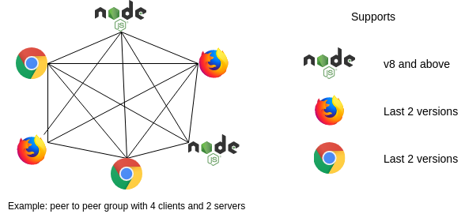

Netflux

Universal Javascript peer to peer transport API for client and server.
Secure and fault tolerant full mesh peer to peer network based on RTCDataChannel and WebSocket.
Send/receive String and Uint8Array data types.
Documentation: https://coast-team.github.io/netflux



Features
- Peer to peer full mesh network which accepts connection failures between some peers.
- If connection between two members failed, other members will retransmit messages for them.
- Automatic rejoin the group if connection lost.
- Automatic selection between WebSocket & RTCDataChannel.
- Possible to have mixed members: clients (Chrome, Firefox) and servers (NodeJS bot).
- Send private or broadcast String, Uint8Array data types.
- Possible to send data > 1MB.
- All connections are encrypted.
- Full control over WebRTC servers: Signaling, STUN and TURN.
- Deploy your own Signaling server (Sigver) or use one provided by default.
- Configure STUN and TURN servers.
- Small Signaling server payload.
- Signaling server is used only to establish connection between two peers, no user data is passing through it.
- Universal API (works in Chrome/Firefox and NodeJS).
- TypeScript declaration files are included.
- Simple and familiar API usage.
- 4 builds (ES5 code):
dist/netflux.cjs.jsCommonJS format for NodeJS (see package.json#main).dist/esm/index.node.jsES module format for NodeJS (see package.json#module).dist/esm/index.browser.jsES module format for browsers (see package.json#browser).dist/netflux.umd.jsUMD format for browsers.
Usage
Here is a basic usage example for client and server (checkout the documenation for more details).
It is possible to have only clients without any bot server as his is not a mandatory member, but like any other group member.
Client
import { WebGroup, WebGroupState } from 'netflux'
// Create instance and set callbacks
const wg = new WebGroup()
wg.onMemberJoin = (id) => {
console.log('Member ' + id + ' has joined')
console.log('All members are: ', wg.members)
}
wg.onMemberLeave = (id) => {
console.log('Member ' + id + ' has left')
console.log('All members are: ', wg.members)
}
wg.onMessage = (id, data) => {
console.log(`Message from ${id} group member`, data)
}
wg.onStateChange = (state) => {
console.log('The new Group state is ', state)
switch (state) {
case WebGroupState.JOINING:
// Do something
break
case WebGroupState.JOINED:
// Do something
// For example inviting a bot...
wg.invite('BOT_SERVER_WEB_SOCKET_URL')
break
case WebGroupState.LEAVING:
// Do something
break
case WebGroupState.LEFT:
// Do something
break
}
}
// Join the group
wg.join('MY_UNIQUE_KEY_FOR_THE_GROUP')
Bot Server
import { WebGroupBotServer } from 'netflux'
const http = require('http') // https is also possible
const server = http.createServer()
const bot = new WebGroupBotServer({
server: server,
webGroupOptions: {
// Any WebGroup options like for a client
},
})
bot.onWebGroup = (wg) => {
// New instance of a WebGroup (Someone has invited this bot).
// See example above for client as it is the same API.
}
server.listen(BOT_PORT, _BOT_HOST)
// A client may invite this bot with the following URL: 'ws://BOT_HOST:BOT_PORT'
Demo
Netflux is used by our team for Multi User Text Editor (MUTE repo) development. The demo version is available on: https://coedit.re.